차세대를 이끌어 나갈 글로벌 인재 육성
오사카 코리안 인터내셔널 스쿨
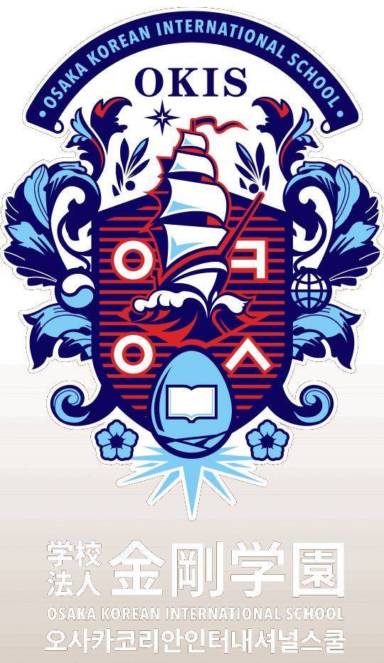
1946-2026
금강학원이 걸어온 길
80년의 뿌리, 100년의 날개!
세계 최초의 재외한국학교
재일동포 1세들의 열정과 신념, 교직원들의 헌신,
그리고 학생들의 끊임없는 노력이 쌓여
오늘의 OKIS를 이루었습니다.
창립 이래 수많은 시련을 이겨내며
교육의 사명을 묵묵히 실천해 온 80년의 발자취야말로
본교가 추구해 온 교육의 가치와 신뢰를
가장 분명하게 보여주고 있습니다.
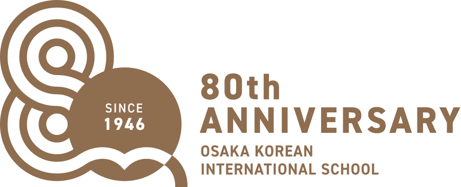
-
1946.0204니시나리 조선인 교육회 결성니시나리 조선인 소학교 개교
-
1948.02오사카시 니시나리구 바이난 교사 신축
-
1950.03재단법인 금강학원 금강소학교 설립 인가
-
1951.03학교법인 금강학원으로 변경
-
1954.04금강중학교 신설
-
1960.04금강고등학교 신설
-
1961.02한국 문교부, 재외한국학교 인가
-
1985.11오사카부, 중·고등학교(일반학교) 인가
-
2009.03태권도 전문 도장 ‘금강수련관’ 개관
-
2016.05창립 70주년 기념식 거행
-
2021.04‘오사카 금강 인터내셔널 스쿨(OKIS)’로 교명 변경
-
2026.10창립 80주년 기념식 ‘오사카 코리안 인터내셔널 스쿨(OKIS)’로 교명 변경
엠블럼 소개
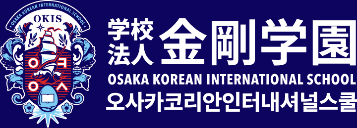
학교법인 금강학원의 학교명을 OKIS (오사카 코리안 인터내셔널 스쿨, Osaka Korean International School)로 바꾸었습니다. Korean이라는 정체성과 아이덴티티를 유지하면서, 세계 속에서 자랑스러운, 한국과 일본을 넘어선 글로벌 인재를 양성하겠다는 100년의 목표를 담았습니다.
교가와 교복
OKIS 교가는 대한민국을 대표하는 히트 작곡가 조영수와 가수 황규영, 작곡가 김성호가 특별히 참여하여 제작하였으며 ‘나는 더 강해질거야’와 ‘나는 문제없어’ 두 곡을 기증하였습니다.
한국의 최고 교복업체인 형지엘리트와 협업하여 OKIS만의 새로운 교복을 선보입니다.재일한국학교 중 최초로 도입되는 트렌디한 K-교복으로 학생들의 자부심을 더 높이겠습니다.
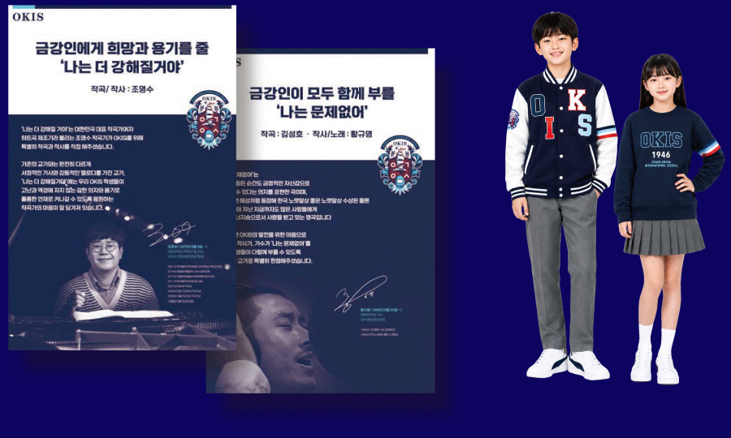
〒559-0034 오사카시 스미노에구 난코키타 2 쵸메 6 번 10 호
OKIS 이사장 인사말
안녕하십니까? 오사카 코리안 인터내셔널 스쿨
OKIS 이사장 최윤입니다.
원대한 포부로 새로운 도약을 다짐했던 것이 엊그제 같은데, 어느덧 우리 학교가 개교 80주년이라는 역사적 이정표를 맞이했습니다.
먼저,1946년 해방 직후의 척박한 여건 속에서도 “후손들에게 반드시 민족의 뿌리와 교육을 이어가야 한다”는 신념 하나로 학교의 전신 ‘니시나리 조선인 소학교’를 세워주신 재일동포 1세대들의 헌신에 고개 숙여 깊은 경의를 표합니다.
아울러 모진 바람 속에서도 OKIS의 이름과 정신을 지켜주신 역대 이사장님과 교직원, 학부모, 동문, 재일동포 사회 모든 분들께 심심한 감사의 말씀을 드립니다.
돌이켜보면 2019년 제가 이사장으로 부임했을 당시 OKIS는 통폐합마저 논의되던 녹록지 않은 상황이었습니다.
그러나 결코 주저앉지 않았습니다. ‘남들과는 다른 사고방식’으로 학교의 정체성을 다시 세우는 개혁과 과감한 커리큘럼 확충을 멈추지 않았고, 그 결과 190명대까지 무너졌던 학생 수가 300명을 넘어서는 경이로운 성장을 이루며 명실상부한 ‘코리안 인터내셔널 스쿨’로 당당히 거듭났습니다.
저는 이 길을, 과거의 틀을 깨는 이단의 도전이 글로벌 한국교육의 새로운 정통으로 우뚝 서는 과정이라 믿습니다. 우리는 지난 80년의 빛나는 성취를 자양분 삼아, 교명에 코리안(Korean)을 내건 제 2의 개교를 비장한 마음으로 준비하며, 트라이링구얼 교육으로 세계와 당당히 소통하는 인재를 길러 내고자 합니다. 나아가 한국과 일본을 넘어 누구나 입학하고 싶은 명문, 한민족 글로벌 인재 양성의 요람으로 만들겠습니다.
80년을 지나 100년의 날개를 펼치며 도약하는 OKIS의 열정적인 앞날에 아낌없는 성원을 부탁드립니다.
감사합니다.
오사카 코리안
인터내셔널 스쿨 이사장
최 윤
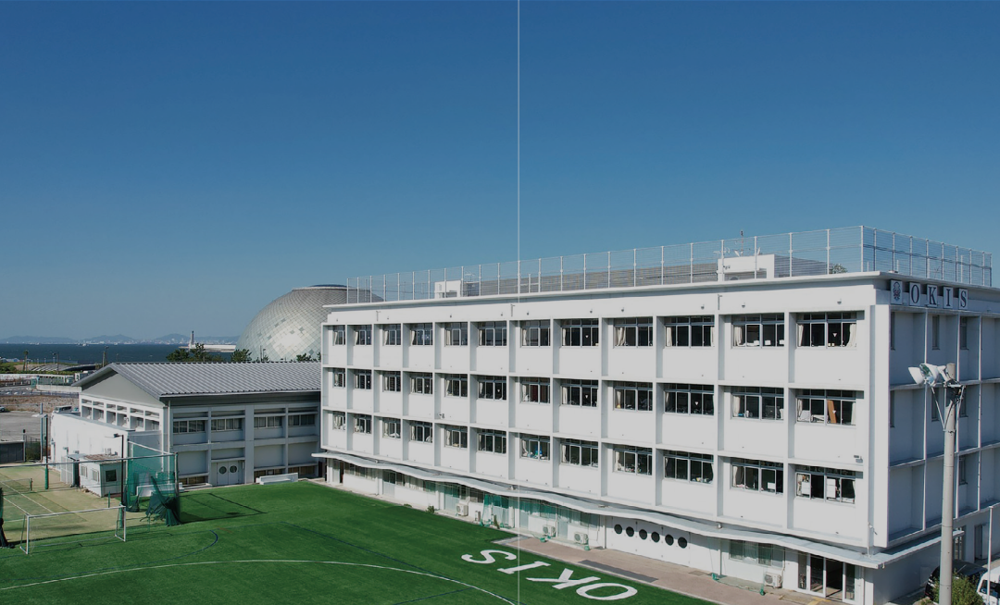
금강을 지켜온 사람들
재일동포의 헌신으로 지켜온 80년,
금강을 이끌어온 분들입니다
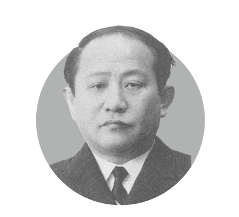
대표이사백헌(1949)
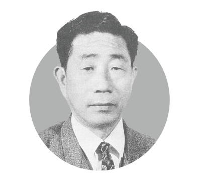
初代최인준(1951)
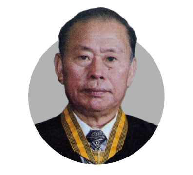
2代서갑호(1957)
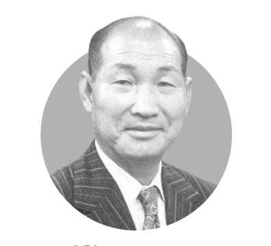
3代박한식(1977)
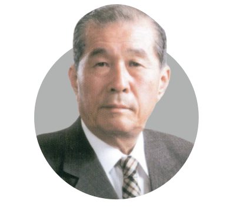
4代박승완(1981)
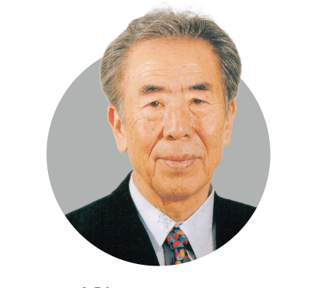
5代고기수(2001)
6代곽창곤(2004)
7代고기수(2005)
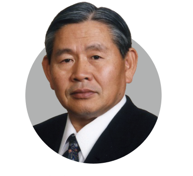
8代김한익(2006)
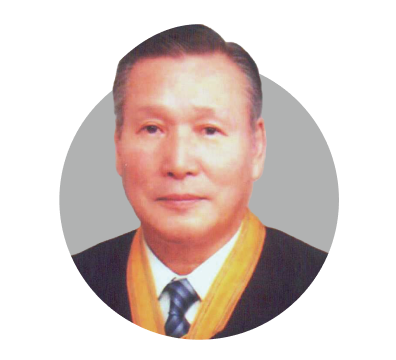
9代양광상(2012)
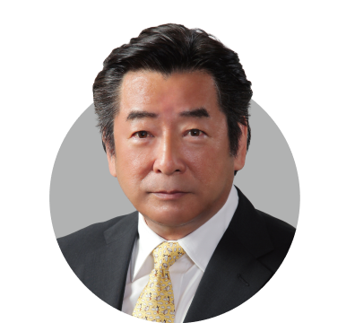
10代조영길(2015)
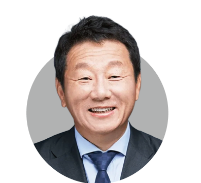
11代최윤(2019~)
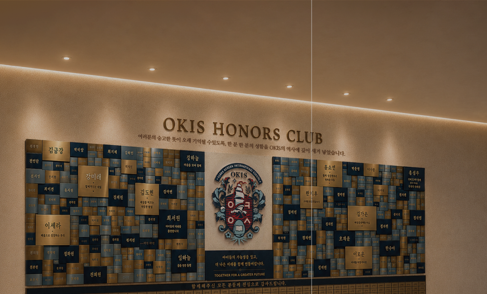
성금 모금 안내
수많은 시련 속에서도
교육의 불씨를 꺼뜨리지 않고 지켜온 OKIS의 역사가
어느덧 80년이 되었습니다.
개교 80주년을 맞아 노후화된 시설을 개선하고,
더욱 체계적이고 수준높은 교육 커리큘럼을 정비하며 글로벌 교류 경험까지 넓혀가겠습니다.
아울러 더 넓고 쾌적한 교육환경을 위해
‘OKIS Growth 센터’ 건립 및 학교 발전을 추진하여
다음 100년의 청사진을 그려 나가고자 합니다.
민족교육의 새로운 100년을 함께 여는 이 뜻깊은 여정에 여러분의 마음을 더해주세요.
빛내주신 여러분의 성함을 교내 OKIS 기부자
현판(OKIS Honors Club)과 학교 홈페이지에
깊이 새겨넣겠습니다.
기부금영수증 발급 관련 QR코드
寄付金領収書発行に 関するQRコード
1. 한국내에서 송금
계좌번호 : 신한은행 140-016-474118
계좌주명 : (재)오케이배정장학재단
기부안내 : OK배정장학재단 사무국
*오케이배정장학재단 특별계좌로 보내주신 성금은 추후 OKIS로 정성껏 전달하겠습니다.
*입금자명과 발행대상자가 일치해야 기부금 영수증 발행이 가능합니다.
2. 日本国内からの送金
【振込先口座】
銀行名 : りそな銀行 萩ノ茶屋支店
口座種別 : 普通
口座番号 : 0363451
口座名義 : 学校法人金剛学園理事長 崔 潤
(ガク) コンゴウガクエンリジチョウ チェユン
担当者 : チョン・ジョンホン